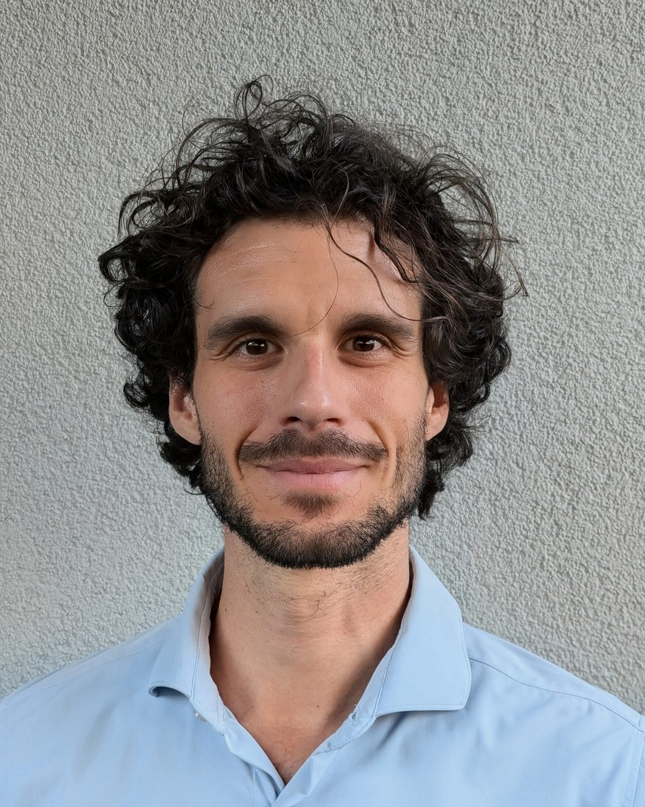

Hello, I’m Emanuele
I am a physical chemist fascinated by systems that refuse to sit still. As a chemistry undergraduate I fell for molecular motors, which led me to a PhD in physics on the thermodynamics of chemical engines. Since then I have worked at the boundary between theory and experiment: with synthetic chemists in Manchester, Bologna, Padova and Strasbourg, and with statistical physicists in Luxembourg and at Northwestern University.
I like questions that are interesting for theorists and useful for experimentalists, and I think the best way to find them is to talk to each other a lot. That is the spirit I want for our group in Mainz.
Bio for organisers and press
Ready to paste into a programme or press release. Need a photo or a CV? Just ask.
Emanuele Penocchio is a tenure-track professor and Wübben Foundation Professor at Johannes Gutenberg University Mainz (Germany). Trained in Bologna and Pisa (Italy), Luxembourg, Northwestern University (USA) and Strasbourg (France), he develops theory and simulations for chemical systems out of equilibrium, from molecular motors to active transport.
Emanuele Penocchio is a tenure-track professor and Wübben Foundation Professor for Theoretical Chemistry of Macromolecular and Supramolecular Systems at Johannes Gutenberg University Mainz (Germany). He studied chemistry at the Universities of Bologna and Pisa (Italy), as a student of the Collegio Superiore and the Scuola Normale Superiore, and received his PhD in physics from the University of Luxembourg in 2022, working with Massimiliano Esposito. After postdoctoral research in Luxembourg and at Northwestern University (USA) with Todd Gingrich, and a Marie Skłodowska-Curie fellowship at the University of Strasbourg (France), he set up his research group in Mainz in November 2026. His research develops theory and simulations for chemical systems out of equilibrium, from molecular motors and ratchets to active transport and electrically driven chemistry. His work has been recognised with the Ruth Lynden-Bell PhD Prize of the Royal Society of Chemistry, the FNR Award for Outstanding PhD Thesis, the Rolf Tarrach Award and the shared RSC Perkin Prize in Physical Organic Chemistry.
The path so far
- 2011–2014Bologna, ItalyBSc in Chemistry, University of Bologna and Collegio Superiore
- 2014–2017Pisa, ItalyMSc in Chemistry (2016), University of Pisa; Scuola Normale Superiore
- 2017–2022LuxembourgPhD in Physics with Massimiliano Esposito, then postdoc
- 2022–2026Evanston, USAPostdoc with Todd Gingrich, Northwestern University
- 2026Strasbourg, FranceMarie Skłodowska-Curie Fellow with Giulio Ragazzon, ISIS
- Since Nov 2026Mainz, GermanyTenure-track professor and Wübben Foundation Professor, JGU
Awards and fellowships
- 2026Tenure-Track Professorship, Wübben Stiftung WissenschaftSix-year funding for the new group in Mainz
- 2026Marie Skłodowska-Curie Postdoctoral Fellowship, European CommissionTheory and experiments at the Institute of Supramolecular Science and Engineering, Strasbourg, France
- 2024Ruth Lynden-Bell PhD Prize, Royal Society of ChemistryFor the best PhD thesis in statistical mechanics and thermodynamics
- 2024Foresight Fellow, Molecular Machines, Foresight Institute
- 2024Future Faculty Program, International Institute for Nanotechnology
- 2023FNR Award for Outstanding PhD Thesis, Luxembourg National Research FundFor the best PhD thesis in Luxembourg across all disciplines
- 2023Rolf Tarrach Award, Les Amis de l’Université du LuxembourgFor the best PhD thesis at the University of Luxembourg across all disciplines
- 2023Perkin Prize in Physical Organic Chemistry, Royal Society of ChemistryShared with the “Molecular Ratcheteers” collaboration
- 2022Distinguished Student Award, Foresight InstituteFor work advancing the development and understanding of nanotechnology
- 2022Excellent Thesis Award, University of Luxembourg
- 2011–2017Full scholarships, Collegio Superiore (Bologna) and Scuola Normale Superiore (Pisa)Merit-based honours programmes admitted through national competitions
Selected invited talks
Want Emanuele to speak at your conference or seminar series? Get in touch; the bio above is ready to copy.
- 2026Mach-5 conference on molecular machineryLiblice, Czech Republic
- 2026Lectures at the seasonal school on systems chemistryUniversity of Padova, Italy
- 2025Closing plenary lecture, “The future of biophysics: from 2025 to 2050 and beyond”Satellite meeting of the 15th European Biophysics Congress, Rome, Italy
- 2025Emerging Investigator talk, 6th ERC Grantees ConferencePorvoo, Finland
- 2025Ruth Lynden-Bell Prize lectureRSC & Higgs Centre workshop “Non-equilibrium thermodynamics: from chemical reactions to machine learning”, Edinburgh, UK
- 2025Chemistry department-wide lectureUniversity of Cambridge, UK
- 2025Seminars at Washington University in St. Louis, the RSC Macrocyclic and Supramolecular Chemistry series (online) and ISTA, Austria
- 2024Mach-5 conference on molecular machineryBertinoro, Italy
- 2024Seminars at the Technical University of Munich and the Foresight Institute (online)
- 2023Seminars at the University of Luxembourg, Politecnico di Torino and Penn State (online)
- 2022Selected talk, Gordon Research Conference on Systems ChemistryNewry, Maine, USA
- 2019Invited talk, Santa Fe Institute workshop on thermodynamic and computational efficiency in cellular chemical reactionsSanta Fe, New Mexico, USA
- 2018Seminar, Department of Materials, University of Oxford
Teaching, service and outreach
Teaching
At JGU, Emanuele’s teaching focuses on statistical mechanics and multiscale modelling. Before Mainz he lectured at the systems chemistry school in Padova and taught thermodynamics and statistical mechanics at the University of Luxembourg, including the (post)modern thermodynamics doctoral school whose lecture notes are free to read.
Science for everyone
In 2010 Emanuele co-founded Chirone, a science education association that runs hands-on laboratories for children in rural northern Italy, science events and virtual science cafés; he is its scientific director. From 2017 to 2022 he was an organiser and scientific entertainer at Festivaletteratura, the literature festival in Mantova, and he was a finalist of the national science communication prize GiovedìScienza.
Service
Referee for Nature Nanotechnology, the Journal of the American Chemical Society, PNAS, Angewandte Chemie, Chem, Physical Review X, Physical Review Letters and others. Member of the German Association of University Professors and Lecturers (DHV). Former student representative on the boards of the Scuola Normale Superiore and the Collegio Superiore.
Away from the desk
Outside work, Emanuele enjoys the outdoors, climbing and team sports. In quieter moments he reads, listens to podcasts and keeps working on his German.